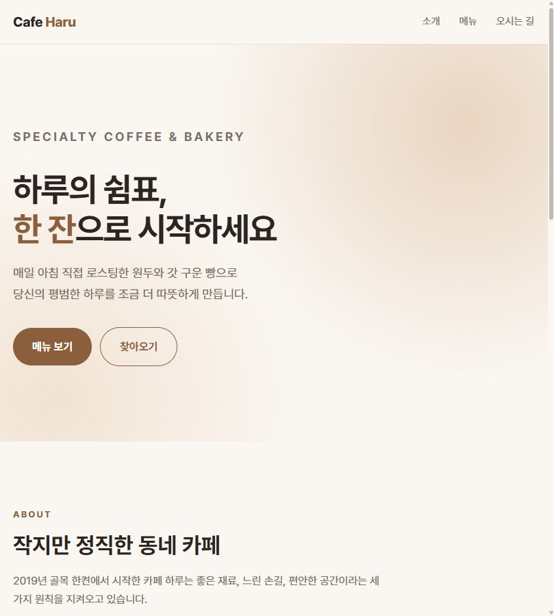
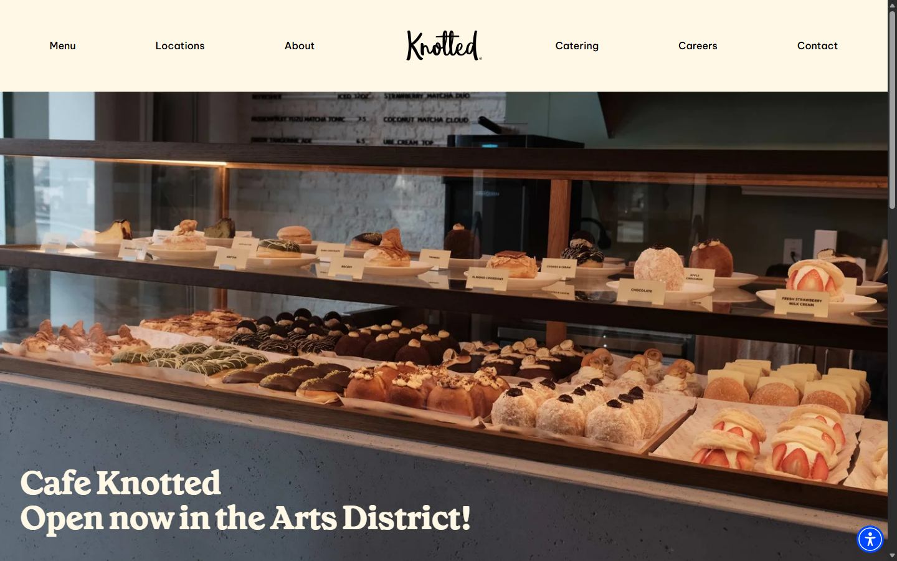
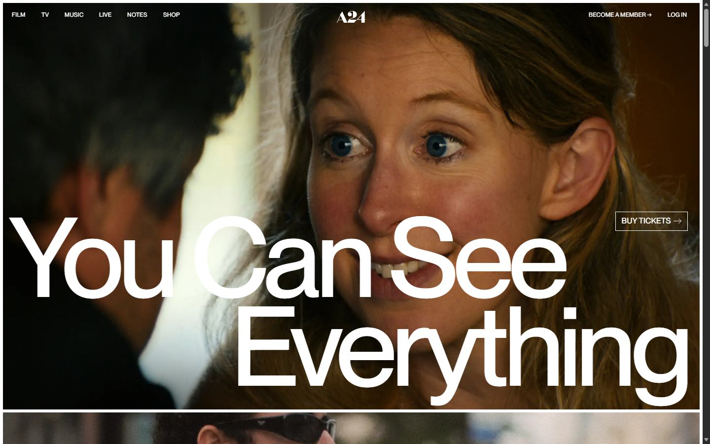
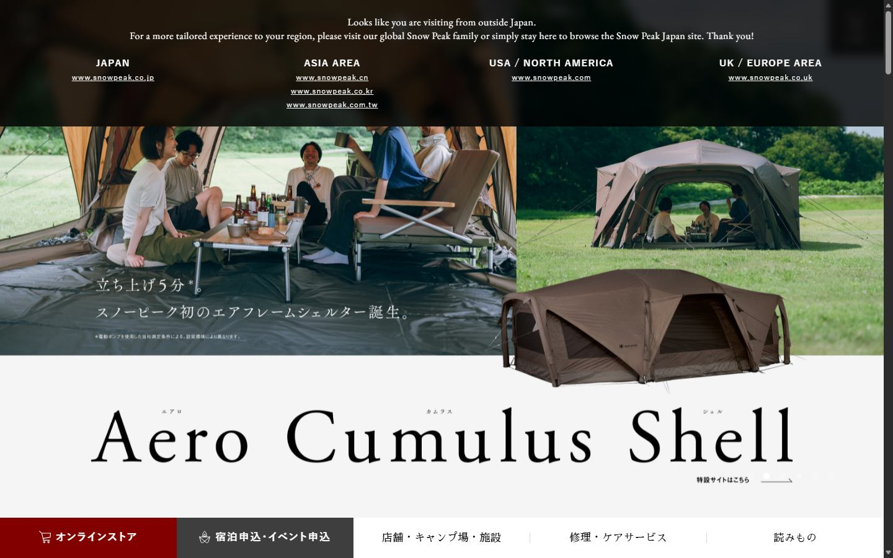
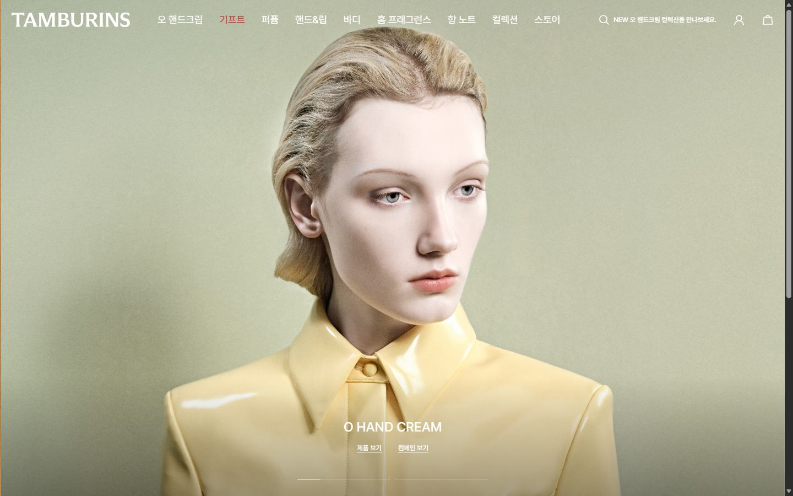

DAY 03바이브코딩 · 카페 웹페이지
AI 티 안 나는 카페 웹페이지 만들기
"예쁘게 만들어줘" 대신 색 · 글꼴 · 하지 않을 것을 먼저 정하고, 그 결정대로 한 번에 만듭니다. 그다음 AI가 만든 티가 나는 부분을 찾아 지우고, 사진을 명령으로 다루면서 실제 가게 같은 페이지를 완성합니다.
1.수업 구성
DAY 02에서 첫 프로젝트를 만들어 본 초급자
같은 사진 · 같은 내용으로 MELLOW BEAN 카페 페이지를 함께 만들고, 마지막에 내 것으로 바꾸기
전체 수업의 약 70% 이상
형용사 대신 결정을 주고 한 번에 만든 뒤, AI 티가 나는 부분을 지워서 실제 가게 같은 페이지 완성하기
2.오늘 만들 것 · 완성 예시
대구 중구 골목 안의 가상 카페 MELLOW BEAN의 한 페이지 웹사이트를 만듭니다. 먼저 완성 예시를 열어 보고 "오늘은 이 정도를 만든다"는 기준을 잡으세요. 똑같이 만들 필요는 없습니다.
Section 4개로 단순하게
둥근 카드 3개 + 그림자 — 어느 사이트에나 있는 모양
실제 카페 메뉴판처럼. 사진 · 이름 · 설명 · 가격 순서가 DAY 04 Database의 칸과 그대로 맞습니다.
전체 흐름
3.STEP 01. 사진 받기 · 파일 이름 정리 명령
- 위의 사진 묶음 내려받기를 누릅니다.
- 내려받은
mellow-bean-photos.zip을 마우스 오른쪽 → 압축 풀기(모두 압축 풀기)합니다. - VS Code에서 새 폴더
mellow-bean을 만들어 엽니다. - 그 안에
받은사진폴더를 만들고, 압축을 푼 사진 7장을 넣습니다. - 사진 이름을 살펴봅니다 —
IMG_2041.jpg,라떼사진 최종.jpg,tiramisu (1).jpg,에이드.JPG…
왜 이름부터 정리할까?
웹에서는 한글 · 띄어쓰기 · 괄호가 든 파일 이름이 깨지거나 사진이 안 보이는 원인이 됩니다. 대문자 .JPG와 소문자 .jpg도 서버에서는 서로 다른 파일입니다. 규칙은 세 가지 — 영어 소문자, 단어 사이는 -, 무엇인지 알 수 있는 이름.
4.왜 AI가 만든 사이트는 다 비슷해 보일까
"깔끔하고 따뜻한 카페 사이트 만들어줘"라고 하면 AI는 가장 흔한 답을 냅니다. 수많은 사이트의 평균이라 틀리지는 않지만, 어디서 본 듯한 모양이 됩니다.


크게 보기- • 크림색 배경 + 갈색 글자 + 갈색 포인트 — 카페라고 하면 거의 항상 나오는 조합
- • 둥근 알약 모양 버튼 두 개("메뉴 보기" · "찾아오기")
- • 은은한 그라데이션 배경
- • 작은 영어 대문자 꼬리표("SPECIALTY COFFEE & BAKERY")
- • 어느 카페에나 붙일 수 있는 문구("하루의 쉼표, 한 잔으로 시작하세요")
잘못 만든 것이 아니라 가장 평균적인 답입니다. 아래 점검표와 하나씩 비교해 보세요.
AI 티 점검표 — STEP 04에서 다시 씁니다
실제 브랜드 사이트는 이렇게 다릅니다 — 각자 하나씩 분명한 결정


크게 보기

크게 보기

크게 보기

크게 보기수업용 참고 캡처입니다. 배치와 결정만 참고하고, 다른 회사의 사진 · 로고 · 문구는 가져다 쓰지 않습니다.
해결 — 형용사 대신 결정을 줍니다
5.STEP 02. 디자인노트.md — 결정을 먼저 적기
md 파일
제목(#)과 목록(-)만으로 쓰는 메모 파일입니다. 사람도 읽기 쉽고 Claude Code도 읽기 쉽습니다. 오늘은 내가 결정을 적고, Claude Code는 그 메모를 보고 만듭니다. 이 메모를 AI가 매번 자동으로 읽게 만든 것이 DAY 06에서 배울 CLAUDE.md입니다.
- VS Code 왼쪽 탐색기에서
mellow-bean폴더에 새 파일디자인노트.md를 만듭니다. - 아래 틀을 복사하기로 붙여 넣습니다.
- [ ] 부분을 내 결정으로 바꿉니다. 처음이면 채워 본 예를 그대로 써도 됩니다.
- 저장합니다 (Ctrl + S).
색 고르기 팁 — 배경은 완전한 흰색 대신 아주 연한 색, 글자는 완전한 검정 대신 아주 진한 색, 포인트는 딱 하나. 색 코드(#으로 시작하는 6자리)는 구글에서 "색상 선택기"로 검색하면 고를 수 있습니다.
6.STEP 03. 결정대로 한 번에 만들기
이번에는 구조 · 내용 · 디자인을 한 번에 요청합니다. 방향(디자인노트)이 정해져 있으니 한 번에 만들어도 흔한 모양으로 흘러가지 않습니다. 요청이 길어서 ■로 묶었습니다.
결과 확인하기
- index.html에서 마우스 오른쪽 → Open with Live Server를 누릅니다.
- Header의 메뉴 · 소개 · 오시는 길을 하나씩 눌러 봅니다.
- "메뉴 보기 →"를 누르면 메뉴로 내려가는지 봅니다.
- 완성 예시를 다른 탭에 열어 나란히 비교합니다.
7.고칠 때 쓰는 3칸 — 이 수업 내내 씁니다
어디를
"메뉴 Section의 가격만"
어떻게
"글자를 조금 더 굵게"
무엇은 그대로
"사진 크기와 다른 Section은 그대로 둬"
AI에게 무엇을 그대로 둘지 말하지 않으면 요청하지 않은 곳까지 바뀔 수 있습니다. 마음에 안 들면 "방금 바꾼 것 되돌려줘".
8.STEP 04. AI 티 빼기
먼저 4번 점검표를 보며 내 눈으로 화면에서 해당하는 곳을 찾아 보세요. 그다음 AI에게도 찾게 하고, 둘을 비교합니다.
판단 문제 — "그림자는 절대 쓰면 안 되나요?" 생각 정리 보기
규칙이 아니라 결정입니다. 그림자를 쓴다면 왜 쓰는지 설명할 수 있을 때만 씁니다. 예를 들어 화면 위에 떠 있는 장바구니 창은 아래 내용과 구분해야 하니 그림자가 이유가 됩니다(DAY 06에서 만납니다). 오늘은 "안 쓴다"고 정한 페이지이므로 뺍니다.
9.STEP 05. 사진 명령 — 줄이기 · 추가 · 교체 · 자르기 · 삭제
Claude Code가 사진으로 할 수 있는 일
사진을 새로 그리는 도구는 아닙니다. 대신 이미 있는 사진의 크기 · 형식 · 이름 · 자르기 · 위치를 명령으로 바꿀 수 있습니다. 배경 지우기나 사진 속 물건 바꾸기는 이미지 생성 AI의 일입니다.
학원 PC는 Windows라서 Claude Code가 PowerShell 같은 기본 도구로 처리합니다. 프로그램 설치를 물어보면 무엇을 설치하는지 읽고 허락하세요.
① 용량부터 확인하기
받은사진 폴더의 KakaoTalk_20261118_143052.png에 마우스를 올리거나 파일 탐색기에서 크기를 보세요. 약 2.8MB입니다. 다른 사진은 0.1~0.3MB입니다. 사진이 크면 사이트가 느려지고, 서버 비용도 늘어납니다(DAY 04에서 자세히).
② 교체 · 자르기 · 삭제 — 하나씩 해 보기
| 하고 싶은 일 | 이렇게 요청하기 |
|---|---|
| 교체 | "첫 화면 사진을 store.jpg로, 소개 Section 사진을 hero.jpg로 바꿔줘. 크기와 배치는 그대로" → 마음에 안 들면 "방금 바꾼 것 되돌려줘" |
| 자르기 | "store.jpg를 가운데 기준으로 가로세로 4:3으로 잘라서 store-crop.jpg로 저장하고 소개 Section에 써줘. 원본은 그대로" |
| 삭제 | "메뉴에서 Mellow Ade 줄의 사진만 빼줘" → 확인한 뒤 "다시 원래대로 넣어줘" |
| 정리 | "images 폴더에서 지금 사이트에서 쓰지 않는 사진을 찾아서 목록만 보여줘. 지우지는 마" |
사진 경로 한 줄
코드 안의 images/cappuccino.jpg는 "index.html이 있는 폴더 안의 images 폴더에 있는 cappuccino.jpg"라는 뜻입니다. 사진이 안 보이면 거의 항상 이름이나 폴더가 다릅니다.
10.STEP 06. 휴대폰 화면 확인 · 고치기
- Live Server 화면에서 F12를 누릅니다.
- 개발자 도구 왼쪽 위의 휴대폰 모양 버튼(Toggle device toolbar)을 누릅니다.
- 화면 위쪽 기기 목록에서 iPhone 12 Pro(폭 390)를 고릅니다.
- 위에서 아래로 천천히 내려 보며 아래 네 가지를 확인합니다.
11.STEP 07. 작업노트.md — 오늘 쓴 방법 남기기
오늘 잘 통한 요청 방식을 다음에도 쓰려면 기록이 필요합니다. 정리는 AI에게 맡기고, 나는 읽고 마지막 칸을 직접 채웁니다.
12.Git으로 저장하기
처음이라면 DAY 02에서 만든 방식대로 GitHub에 새 Repository를 만들고 연결한 뒤 진행합니다.
받은사진 폴더의 큰 원본까지 올라가는 것이 싫다면 "받은사진 폴더는 Git에 올리지 않게 해줘"라고 요청하세요 (.gitignore).
13.더 해 보기 — 내 카페로 바꾸기
디자인노트.md의 카페 이름 · 분위기 한 줄 · 색 3개만 바꾸고 아래처럼 요청해 보세요. 메모 하나로 사이트 전체가 바뀝니다. 메뉴 한 줄의 구조(사진 · 이름 · 설명 · 가격)는 다음 수업을 위해 유지합니다.
바꿔 보기 — 처음 한 번은 색 하나만, 다음엔 분위기 한 줄까지
예: 포인트 색을 #2f5d50(짙은 초록)으로 / 분위기를 "아침 일찍 여는 베이커리 카페"로
14.DAY 03 정리 & 다음 수업
오늘의 결과물
다음 수업 예고 — DAY 04
메뉴가 30개가 되면, 하나 추가할 때마다 HTML을 고쳐야 할까?
메뉴 정보를 서버의 Database(Supabase)로 옮기고, HTML을 건드리지 않고도 새 메뉴가 화면에 나타나게 만듭니다. 오늘 정리한 사진 이름(images/…)이 그대로 쓰입니다.